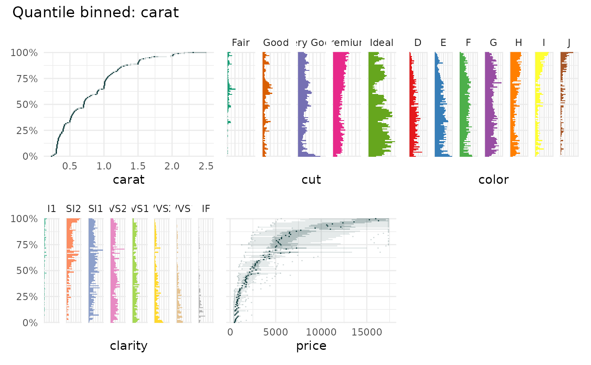
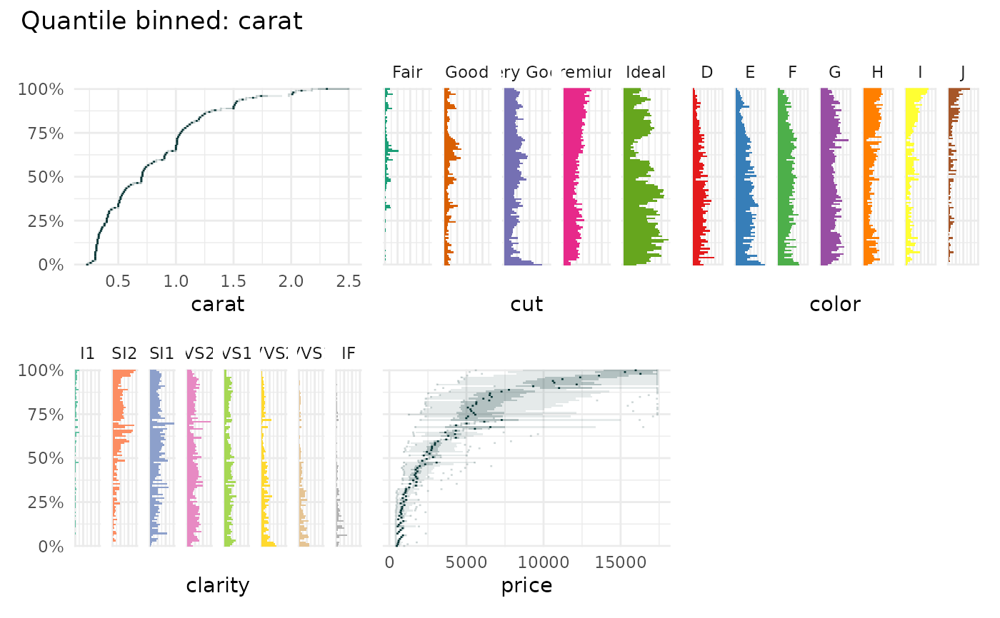

Quantile binned boxplot
qbin_boxplot.Rdqbin_boxplot creates quantile binned boxplots from data using x as the binning
variable. It focuses on the change of median between qbins. It is a
complement to qbin_heatmap() which focuses on the distribution within the qbins.
qbin_boxplot(
data,
x = NULL,
n = 100,
min_bin_size = 5,
ncols = NULL,
overlap = NULL,
connect = FALSE,
color = "#002f2f",
fill = "#2f4f4f",
auto_fill = FALSE,
qmarker = NULL,
xmarker = NULL,
...
)Arguments
- data
a
data.frameto be binned- x
charactervariable name used for the quantile binning- n
integernumber of quantile bins.- min_bin_size
integerminimum number of rows/data points that should be in a quantile bin.- ncols
The number of column to be used in the layout
- overlap
logicalifTRUEthe quantile bins will overlap. Default value will beFALSE.- connect
if
TRUEsubsequent boxplots are connected- color
The color to use for the lines
- fill
The color to use for the bars
- auto_fill
If
TRUE, use a different color for each category- qmarker
numeric, the quantile marker to use.- xmarker
numericthe x marker, i.e. the value for x that is translated into a q value.- ...
Additional arguments to pass to the plot functions
Value
A list of ggplot objects.
Details
The data is binned by the x and a boxplot is created for each bin.
The median of the subsequent boxplots are connected to highlight jumps in the
data. It hints at the dependecy of the variable on the binning variable.
See also
Other qbin plotting functions:
qbin_barplot(),
qbin_heatmap(),
qbin_lineplot()
Examples
qbin_boxplot(
iris,
x = "Sepal.Length",
n = 25,
connect = FALSE,
)
 qbin_boxplot(
iris,
x = "Sepal.Length",
n = 25,
connect = TRUE,
xmarker = 5.5,
auto_fill = TRUE
)
qbin_boxplot(
iris,
x = "Sepal.Length",
n = 25,
connect = TRUE,
xmarker = 5.5,
auto_fill = TRUE
)
 data("diamonds", package="ggplot2")
qbin_boxplot(
diamonds[1:7],
"carat",
auto_fill = TRUE
)
data("diamonds", package="ggplot2")
qbin_boxplot(
diamonds[1:7],
"carat",
auto_fill = TRUE
)
 qbin_boxplot(
diamonds[1:7],
"price",
auto_fill = TRUE,
)

qbin_boxplot(
diamonds[1:7],
"price",
auto_fill = TRUE,
)
